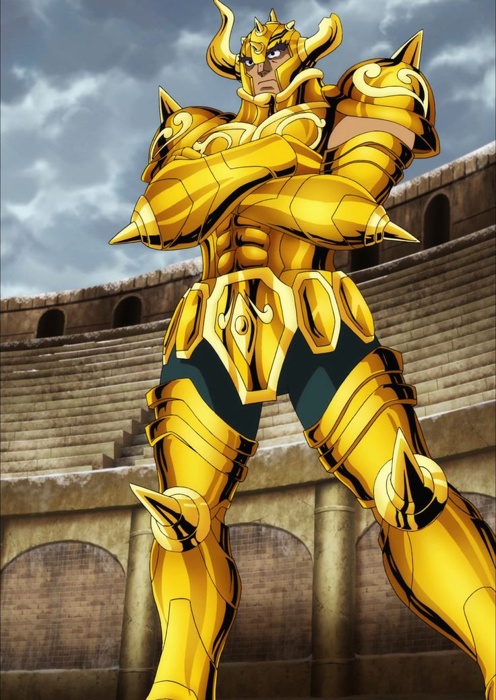
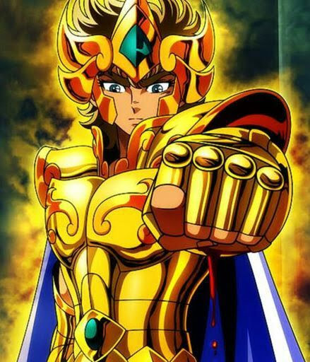
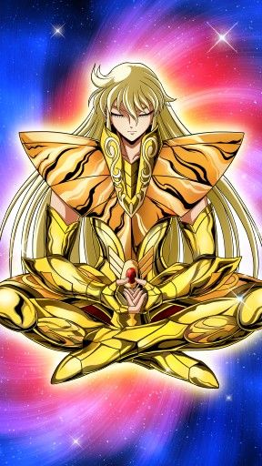
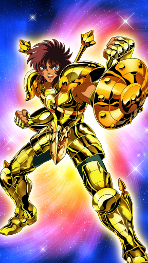

Os Cavaleiros de Ouro são os 12 guerreiros mais poderosos do exército da deusa Atena, invencíveis desde eras mitológicas. Eles trajam as 12 Armaduras de Ouro, que correspondem às constelações do zodíaco, as mais poderosas entre as 88. Os Cavaleiros de Ouro tem dominado o Sétimo Sentido, a essência do Cosmo, que lhes concede capacidades milagrosas, entre elas a capacidade de atingir a velocidade da luz.
Mu de Áries

Mu (ムウ, Mu) é o Cavaleiro de Ouro da Constelação de Áries (牡羊座アリエス, Constelação de Áries) durante os eventos do Século XX, servindo como o guardião da Casa de Áries no Santuário. Afastou-se de suas funções ao notar uma mudança no Grande Mestre – seu antecessor e mentor, Shion – suspeitando, sem provas, de uma conspiração. Isolou-se em Jamir, atuando apenas como reparador de Armaduras até a revelação de Saori Kido, a reencarnação de Atena.
Extinção Estelar
O golpe supremo do cavaleiro de Áries. Como o próprio nome já diz, este ataque é tão poderoso que é capaz até mesmo de destruir estrelas, e sobrepuljar o mais forte de seus imigos. Muitos de seus oponentes subestimam Mu por sua personalidade calma e racional, até verem esse golpe.
Aldebaran de Touro
Aldebaran (アルデバラン, Aldebaran) é o Cavaleiro de Ouro da Constelação de Touro (牡牛座タウラス, Taurus) durante os eventos do Século XX, servindo como o guardião da Casa de Touro no Santuário. Dotado de uma resistência fora do comum, também tem uma grande força física e uma agilidade impressionante para alguém de seu porte. Franco e despachado, confia no que sente; nutre desconfiança pelo Grande Mestre e passa rapidamente a confiar nos defensores de Saori Kido.
Grande Chifre
A técnica mais poderosa do Cavaleiro de Touro, considerada a defesa perfeita, por reunir tanto ataque quanto defesa. O Cavaleiro de Touro descruza e cruza novamente os braços na velocidade da luz e, ao movimentar seus braços nessa velocidade, o Cavaleiro de Touro cria uma massiva rajada de energia poderosíssima, causando danos em seu alvo ou se defendendo de ataques inimigos.
Saga de Gêmeos
Saga de Gêmeos (双子座ジェミニのサガ, Jemini no Saga?) é o irmão gêmeo mais velho de Kanon, pedestinado a se tonar o Cavaleiro de Ouro de Gêmeos do século XX, que antigamente era tido como o próximo sucessor do Grande Mestre, tendo todas as características necessárias para o posto – humanidade, habilidade e força física. Dado como desaparecido há treze anos, no mangá, ele esteve escondido por todo esse tempo sob a máscara do Grande Mestre, depois de assassiná-lo e tomar seu posto como governante do Santuário. No anime, ele toma o lugar do irmão do Grande Mestre, Ares. Seu plano era matar Atena e dominar o mundo. Na verdade, Saga tinha dupla personalidade, oscilando entre extremos do bem e do mal. Dentro dele, esses opostos estavam sempre lutando entre si. Depois de ter seu coração purificado, ele mesmo tira sua própria vida.
Explosão Galáctica
Técnica suprema dos Cavaleiros de Gêmeos, cujo poder dizem ser "capaz de destruir até as estrelas da galáxia". Queimando seu Cosmo intensamente, o usuário lança no alvo uma poderosa onda de choque explosiva, que assume a forma de diversos planetas que se chocam violentamente contra o alvo causando sucessivas explosões. Ainda que a técnica seja má executada, defendida ou desviada, as ondas destrutivas causadas pelas inúmeras explosões acertaram e poderão ferir gravemente o alvo.
Máscara da Morte de Câncer
Máscara da Morte de Câncer (蟹座キャンサーのデスマスク, Kyansā no Desumasuku) é o Cavaleiro de Ouro de Câncer e protetor da quarta Casa do Zodíaco do século XX. Adora lutas, matança e acredita que, para um objetivo maior, alguns sacrifícios são inevitáveis. As paredes da Casa de Câncer são enfeitadas com os rostos das pessoas que foram mortas até hoje por Máscara da Morte. Emite uma aura branca do seu dedo indicador que envia a alma do oponente para a entrada do Mundo dos Mortos – é a Ondas do Inferno, seu golpe secreto. Ele morre na batalha contra Shiryu, mas retorna do Mundo dos Mortos como um Espectro. Nessa ocasião, falha na missão de assassinar Atena e acaba novamente no Mundo dos Mortos pelas mãos de Radamanthys de Wyvern. Apesar disso, participa da derrubada do Muro das Lamentações junto com os Cavaleiros de Ouro.
Ondas do Inferno
A técnica secreta do Cavaleiro de Câncer. O Cavaleiro de Câncer abre um buraco chamado Sekishiki, por onde as almas das pessoas sobem quando mortas, envolve a alma do inimigo com uma aura branca e a arrasta para a entrada do Mundo dos Mortos.
Aiolia de Leão
Aiolia (アイオリア, Aiolia) é o Cavaleiro de Ouro da Constelação de Leão (獅子座レオ, Leo) durante os eventos do Século XX, servindo como o guardião da Casa de Leão no Santuário. Ostracizado por muitos por ser irmão do "traidor" Aiolos de Sagitário, possui um coração puro que faz com que possa distinguir rapidamente os justos; assim, foi um dos primeiros Cavaleiros de Ouro a reconhecer Saori Kido como Atena e confrontar o Grande Mestre impostor por suas maquinações.
Relâmpago de Plasma
A técnica mais poderosa de Aiolia. O Cavaleiro de Leão concentra seu cosmo em seu punho e golpeia com ele, disparando cem milhões de socos na velocidade da luz, que se entrecruzam e atacam o alvo em todas as direções, deixando rastros de luz. Cada soco, dada a velocidade colidida com o atrito do ar, cria vários feixes (ou linhas) que ao entrarem em contato com os adversários, atuam como velozes e pequenas lâminas,
Shaka de Virgem
Shaka de Virgem (乙女座バルゴのシャカ, Barugo no Shaka) é o Cavaleiro de Ouro de Virgem do Século XX, que protege a Casa de Virgem no Santuário. Considerado como a reencarnação de Buda, possui um poder de observação que permite conhecer a verdade escondida sob as aparências. O poder de ir e vir no tempo e espaço impressiona até outros Cavaleiros de Ouro.
Tesouro do Céu
A técnica mais poderosa de Shaka. Capaz de privar seu oponente de todos os seus 5 sentidos, além de deixá-lo sob total controle de Shaka, e também sob um coma permanente, restando nada mais que seus pensamentos. É considerado também a punição divina de Buda.
Dohko de Libra
Dohko (童ドウ虎コ, Dohko) é o Cavaleiro de Ouro da Constelação de Libra (天秤座ライブラ, Constelação de Libra) durante os eventos da Guerra Santa do Século XVIII, servindo como guardião da Casa de Libra no Santuário, e continua com o título durante os eventos do Século XX, como vigia da Terra Enclausurada; em sua forma envelhecida, também é conhecido como Mestre Ancião (老ろう師し, Rōshi). Um dos únicos sobreviventes da guerra, conquistou o respeito de todos. Suspeitou que um impostor usurpara o trono do Grande Mestre e rompeu com o Santuário até o retorno de Atena.
Cólera dos Cem Dragões
A técnica mais poderosa de Dohko, posteriormente ensinada para seu aluno, Shiryu de Dragão. Ao elevar o seu Cosmo ao máximo, o Caveiro de Libra estende os seus braços na direção do oponente e, com suas mãos abertas, libera seu poder sob a forma de inúmeras rajadas, que tomam a forma de dragões em fúria e são disparadas contra o mesmo. As rajadas atingem inimigos simultaneamente e com grande impacto, sendo capazes também de atingir mais de um alvo por vez.